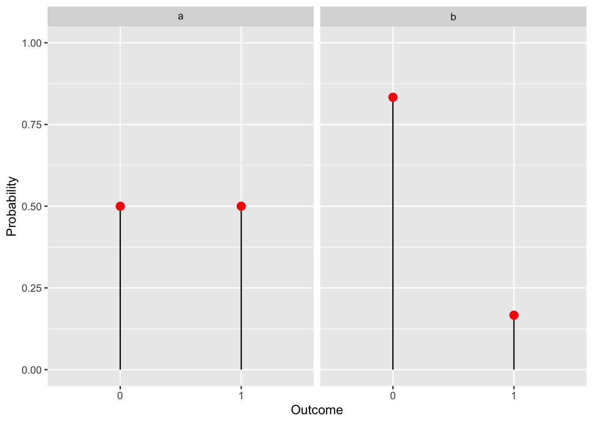
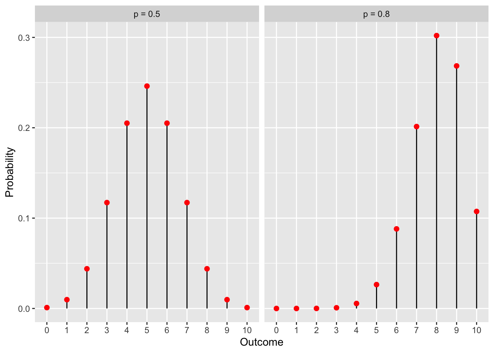
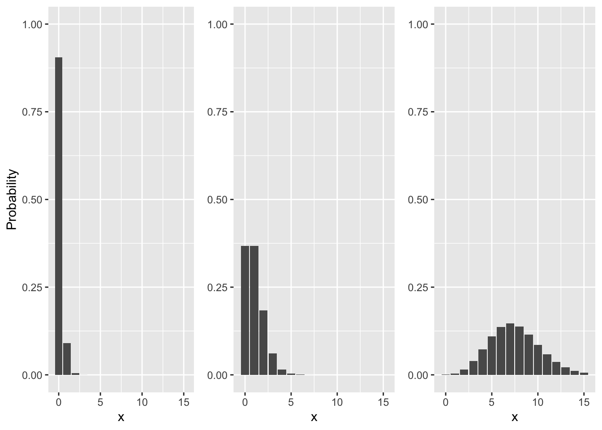
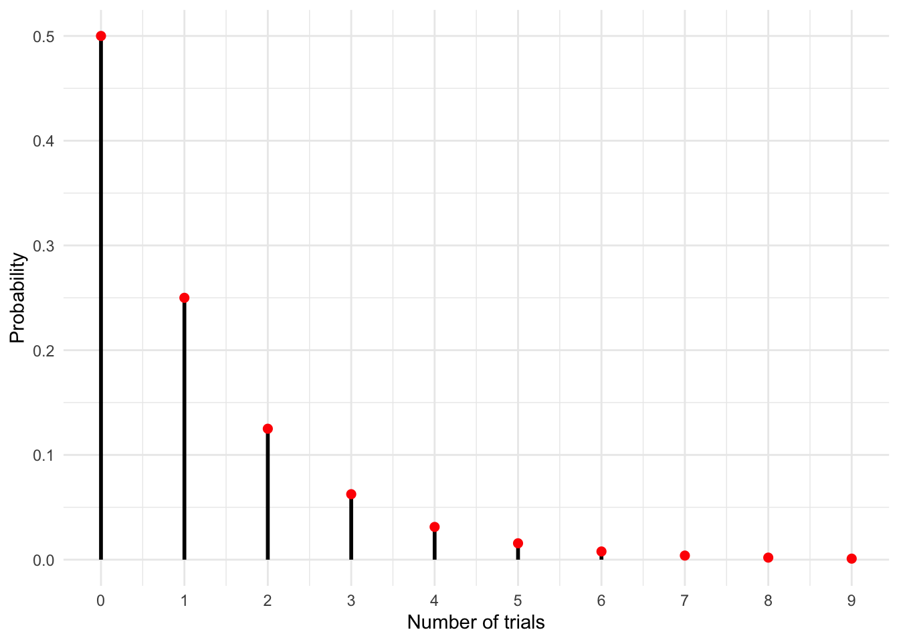
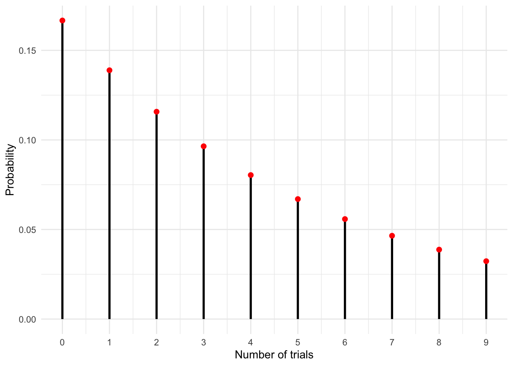
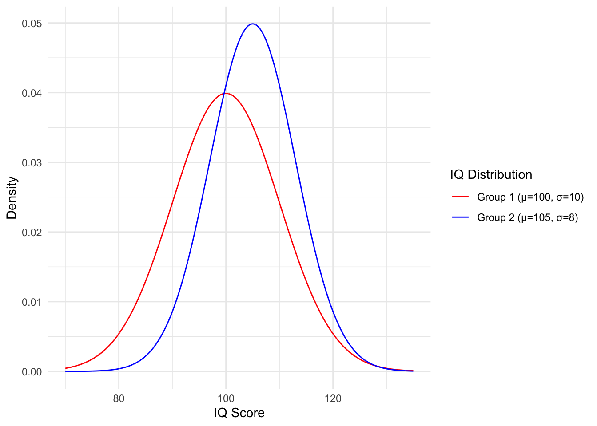
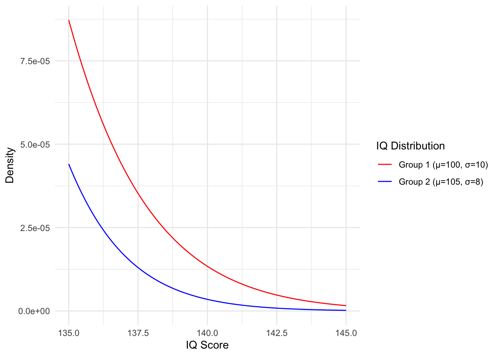

Chapter 18 Distributions intutition
This chapter is intended to help you familiarize yourself with the different probability distributions you will encounter in this course.
You will need to use Appendix B extensively as a reference for the basic properties of distributions, so keep it close!
18.1 Discrete distributions
Exercise 18.1 (Bernoulli intuition 1) Arguably the simplest distribution you will encounter is the Bernoulli distribution. It is a discrete probability distribution used to represent the outcome of a yes/no question. It has one parameter \(p\) which is the probability of success. The probability of failure is \((1-p)\), sometimes denoted as \(q\).
A classic way to think about a Bernoulli trial (a yes/no experiment) is a coin flip. Real coins are fair, meaning the probability of either heads (1) or tails (0) are the same, so \(p=0.5\) as shown below in figure a. Alternatively we may want to represent a process that doesn’t have equal probabilities of outcomes like “Will a throw of a fair die result in a 6?”. In this case \(p=\frac{1}{6}\), shown in figure b.
Using your knowledge of the Bernoulli distribution use the throw of a fair die to think of events, such that:
- \(p = 0.5\)
- \(p = \frac{5}{6}\)
- \(q = \frac{2}{3}\)

Solution.
An event that is equally likely to happen or not happen i.e. \(p = 0.5\) would be throwing an even number. More formally we can name this event \(A\) and write: \(A = \{2,4,6\}\), its probability being \(P(A) = 0.5\)
An example of an event with \(p = \frac{5}{6}\) would be throwing a number greater than 1. Defined as \(B = \{2,3,4,5,6\}\).
We need an event that fails \(\frac{2}{3}\) of the time. Alternatively we can reverse the problem and find an event that succeeds \(\frac{1}{3}\) of the time, since: \(q = 1 - p \implies p = 1 - q = \frac{1}{3}\). The event that our outcome is divisible by 3: \(C = \{3, 6\}\) satisfies this condition.
Exercise 18.2 (Binomial intuition 1) The binomial distribution is a generalization of the Bernoulli distribution. Instead of considering a single Bernoulli trial, we now consider a sequence of \(n\) trials, which are independent and have the same parameter \(p\). So the binomial distribution has two parameters \(n\) - the number of trials and \(p\) - the probability of success for each trial.
If we return to our coin flip representation, we now flip a coin several times. The binomial distribution will give us the probabilities of all possible outcomes. Below we show the distribution for a series of 10 coin flips with a fair coin (left) and a biased coin (right). The numbers on the x axis represent the number of times the coin landed heads.
Using your knowledge of the binomial distribution:
Take the pmf of the binomial distribution and plug in \(n=1\), check that it is in fact equivalent to a Bernoulli distribution.
In our examples we show the graph of a binomial distribution over 10 trials with \(p=0.8\). If we take a look at the graph, it appears as though the probabilities of getting 0,1,2 or 3 heads in 10 flips are zero. Is it actually zero? Check by plugging in the values into the pmf.
Solution.
The pmf of a binomial distribution is \(\binom{n}{k} p^k (1 - p)^{n - k}\), now we insert \(n=1\) to get: \[\binom{1}{k} p^k (1 - p)^{1 - k}\] Not quite equivalent to a Bernoulli, however note that the support of the binomial distribution is defined as \(k \in \{0,1,\dots,n\}\), so in our case \(k = \{0,1\}\), then: \[\binom{1}{0} = \binom{1}{1} = 1\] we get: \(p^k (1 - p)^{1 - k}\) ,the Bernoulli distribution.
As we already know \(p=0.8, n=10\), so: \[\binom{10}{0} 0.8^0 (1 - 0.8)^{10 - 0} = 1.024 \cdot 10^{-7}\] \[\binom{10}{1} 0.8^1 (1 - 0.8)^{10 - 1} = 4.096 \cdot 10^{-6}\] \[\binom{10}{2} 0.8^2 (1 - 0.8)^{10 - 2} = 7.3728 \cdot 10^{-5}\] \[\binom{10}{3} 0.8^3 (1 - 0.8)^{10 - 3} = 7.86432\cdot 10^{-4}\] So the probabilities are not zero, just very small.

Exercise 18.3 (Poisson intuition 1) Below are shown 3 different graphs of the Poisson distribution. Your task is to replicate them on your own in R by varying the \(\lambda\) parameter.
Hint: You can use dpois() to get the probabilities.

library(ggplot2)
library(gridExtra)
x = 0:15
# Create Poisson data
data1 <- data.frame(x = x, y = dpois(x, lambda = 0.1))
data2 <- data.frame(x = x, y = dpois(x, lambda = 1))
data3 <- data.frame(x = x, y = dpois(x, lambda = 7.5))
# Create individual ggplot objects
plot1 <- ggplot(data1, aes(x, y)) + geom_col() +
xlab("x") + ylab("Probability") + ylim(0,1)
plot2 <- ggplot(data2, aes(x, y)) + geom_col() +
xlab("x") + ylab(NULL) + ylim(0,1)
plot3 <- ggplot(data3, aes(x, y)) + geom_col() +
xlab("x") + ylab(NULL) + ylim(0,1)
# Combine the plots
grid.arrange(plot1, plot2, plot3, ncol = 3)Exercise 18.4 (Poisson intuition 2) The Poisson distribution is a discrete probability distribution that models the probability of a given number of events occuring within processes where events occur at a constant mean rate and independently of each other - a Poisson process.
It has a single parameter \(\lambda\), which represents the constant mean rate.
A classic example of a scenario that can be modeled using the Poisson distribution is the number of calls received at a call center in a day (or in fact any other time interval).
Suppose you work in a call center and have some understanding of probability distributions. You overhear your supervisor mentioning that the call center receives an average of 2.5 calls per day. Using your knowledge of the Poisson distribution, calculate:
- The probability you will get no calls today.
- The probability you will get more than 5 calls today.
Solution. First recall the Poisson pmf: \[p(k) = \frac{\lambda^k e^{-\lambda}}{k!}\]
as stated previously our parameter \(\lambda = 2.5\)
To get the probability of no calls we simply plug in \(k = 0\), so: \[p(0) = \frac{2.5^0 e^{-2.5}}{0!} = e^{-2.5} \approx 0.082\]
The support of the Poisson distribution is non-negative integers. So if we wanted to calculate the probability of getting more than 5 calls we would need to add up the probabilities of getting 6 calls and 7 calls and so on up to infinity. Let us instead remember that the sum of all probabilties will be 1, we will reverse the problem and instead ask “What is the probability we get 5 calls or less?”. We can subtract the probability of the opposite outcome (the complement) from 1 to get the probability of our original question.
\[P(k > 5) = 1 - P(k \leq 5)\] \[P(k \leq 5) = \sum_{i=0}^{5} p(i) = p(0) + p(1) + p(2) + p(3) + p(4) + p(5) =\] \[= \frac{2.5^0 e^{-2.5}}{0!} + \frac{2.5^1 e^{-2.5}}{1!} + \dots =\] \[=0.957979\]
So the probability of geting more than 5 calls will be \(1 - 0.957979 = 0.042021\)
Exercise 18.5 (Geometric intuition 1) The geometric distribution is a discrete distribution that models the number of failures before the first success in a sequence of independent Bernoulli trials. It has a single parameter \(p\), representing the probability of success and its support is all non-negative integers \(\{0,1,2,\dots\}\).
NOTE: There are two forms of this distribution, the one we just described and another that models the number of trials before the first success. The difference is subtle yet significant and you are likely to encounter both forms. The key to telling them apart is to check their support, since the number of trials has to be at least \(1\), for this case we have \(\{1,2,\dots\}\).
In the graph below we show the pmf of a geometric distribution with \(p=0.5\). This can be thought of as the number of successive failures (tails) in the flip of a fair coin. You can see that there’s a 50% chance you will have zero failures i.e. you will flip a heads on your very first attempt. But there is some smaller chance that you will flip a sequence of tails in a row, with longer sequences having ever lower probability.
- Create an equivalent graph that represents the probability of rolling a 6 with a fair 6-sided die.
- Use the formula for the mean of the geometric distribution and determine the average number of failures before you roll a 6.
- Look up the alternative form of the geometric distribtuion and again use the formula for the mean to determine the average number of trials before you roll a 6.

Solution. Parameter p (the probability of success) for rolling a 6 is \(p=\frac{1}{6}\).
library(ggplot2)
# Parameters
p <- 1/6
x_vals <- 0:9 # Starting from 0
probs <- dgeom(x_vals, p)
# Data
data <- data.frame(x_vals, probs)
# Plot
ggplot(data, aes(x=x_vals, y=probs)) +
geom_segment(aes(xend=x_vals, yend=0), color="black", size=1) +
geom_point(color="red", size=2) +
labs(x = "Number of trials", y = "Probability") +
theme_minimal() +
scale_x_continuous(breaks = x_vals) # This line ensures integer x-axis labels ::: {.solution} b) The expected value of a random variable (the mean) is denoted as \(E[X]\).
\[E[X] = \frac{1-p}{p}= \frac{1- \frac{1}{6}}{\frac{1}{6}} = \frac{5}{6}\cdot 6 = 5\] On average we will fail 5 times before we roll our first 6.
- The alternative form of this distribution (with support on all positive integers) has a slightly different formula for the mean. This change reflects the difference in the way we posed our question:
\[E[X] = \frac{1}{p} = \frac{1}{\frac{1}{6}} = 6\] On average we will have to throw the die 6 times before we roll a 6. :::
18.2 Continuous distributions
Exercise 18.6 (Uniform intuition 1) The need for a randomness is a common problem. A practical solution are so-called random number generators (RNGs). The simplest RNG one would think of is choosing a set of numbers and having the generator return a number at random, where the probability of returning any number from this set is the same. If this set is an interval of real numbers, then we’ve basically described the continuous uniform distribution.
It has two parameters \(a\) and \(b\), which define the beginning and end of its support respectively.
- Let’s think of the mean intuitively. The expected value or mean of a distribution is the pivot point on our x-axis, which “balances” the graph. Given parameters \(a\) and \(b\) what is your intuitive guess of the mean for this distribution?
- A special case of the uniform distribution is the standard uniform distribution with \(a=0\) and \(b=1\). Write the pdf \(f(x)\) of this particular distribution.
Solution.
- It’s the midpoint between \(a\) and \(b\), so \(\frac{a+b}{2}\)
- Inserting the parameter values we get:\[f(x) = \begin{cases} 1 & \text{if } 0 \leq x \leq 1 \\ 0 & \text{otherwise} \end{cases} \] Notice how the pdf is just a constant \(1\) across all values of \(x \in [0,1]\). Here it is important to distinguish between probability and probability density. The density may be 1, but the probability is not and while discrete distributions never exceed 1 on the y-axis, continuous distributions can go as high as you like.
Exercise 18.7 (Normal intuition 1) The normal distribution, also known as the Gaussian distribution, is a continuous distribution that encompasses the entire real number line. It has two parameters: the mean, denoted by \(\mu\), and the variance, represented by \(\sigma^2\). Its shape resembles the iconic bell curve. The position of its peak is determined by the parameter \(\mu\), while the variance determines the spread or width of the curve. A smaller variance results in a sharper, narrower peak, while a larger variance leads to a broader, more spread-out curve.
Below, we graph the distribution of IQ scores for two different populations.
We aim to identify individuals with an IQ at or above 140 for an experiment. We can identify them reliably; however, we only have time to examine one of the two groups. Which group should we investigate to have the best chance of finding such individuals?
NOTE: The graph below displays the parameter \(\sigma\), which is the square root of the variance, more commonly referred to as the standard deviation. Keep this in mind when solving the problems.
Insert the values of either population into the pdf of a normal distribution and determine which one has a higher density at \(x=140\).
Generate the graph yourself and zoom into the relevant area to graphically verify your answer.
To determine probability density, we can use the pdf. However, if we wish to know the proportion of the population that falls within certain parameters, we would need to integrate the pdf. Fortunately, the integrals of common distributions are well-established. This integral gives us the cumulative distribution function \(F(x)\) (CDF).
- BONUS: Look up the CDF of the normal distribution and input the appropriate values to determine the percentage of each population that comprises individuals with an IQ of 140 or higher.

Solution.
- Group 1: \(\mu = 100, \sigma=10 \rightarrow \sigma^2 = 100\) \[\frac{1}{\sqrt{2 \pi \sigma^2}} e^{-\frac{(x - \mu)^2}{2 \sigma^2}} = \frac{1}{\sqrt{2 \pi 100}} e^{-\frac{(140 - 100)^2}{2 \cdot 100}} \approx 1.34e-05\] Group 2: \(\mu = 105, \sigma=8 \rightarrow \sigma^2 = 64\) \[\frac{1}{\sqrt{2 \pi \sigma^2}} e^{-\frac{(x - \mu)^2}{2 \sigma^2}} = \frac{1}{\sqrt{2 \pi 64}} e^{-\frac{(140 - 105)^2}{2 \cdot 64}} \approx 3.48e-06\]
So despite the fact that group 1 has a lower average IQ, we are more likely to find 140 IQ individuals in this group.
library(ggplot2)
library(tidyr)
# Create data
x <- seq(135, 145, by = 0.01) # Adjusting the x range to account for the larger standard deviations
df <- data.frame(x = x)
# Define the IQ distributions
df$IQ_mu100_sd10 <- dnorm(df$x, mean = 100, sd = 10)
df$IQ_mu105_sd8 <- dnorm(df$x, mean = 105, sd = 8)
# Convert from wide to long format for ggplot2
df_long <- gather(df, distribution, density, -x)
# Ensure the levels of the 'distribution' factor match our desired order
df_long$distribution <- factor(df_long$distribution, levels = c("IQ_mu100_sd10", "IQ_mu105_sd8"))
# Plot
ggplot(df_long, aes(x = x, y = density, color = distribution)) +
geom_line() +
labs(x = "IQ Score", y = "Density") +
scale_color_manual(
name = "IQ Distribution",
values = c(IQ_mu100_sd10 = "red", IQ_mu105_sd8 = "blue"),
labels = c("Group 1 (µ=100, σ=10)", "Group 2 (µ=105, σ=8)")
) +
theme_minimal() ::: {.solution} c. The CDF of the normal distribution is \(\Phi(x) = \frac{1}{2} \left[ 1 + \text{erf} \left( \frac{x - \mu}{\sigma \sqrt{2}} \right) \right]\). The CDF is defined as the integral of the distribution density up to x. So to get the total percentage of individuals with IQ at 140 or higher we will need to subtract the value from 1.
Group 1: \[1 - \Phi(140) = \frac{1}{2} \left[ 1 + \text{erf} \left( \frac{140 - 100}{10 \sqrt{2}} \right) \right] \approx 3.17e-05 \] Group 2 : \[1 - \Phi(140) = \frac{1}{2} \left[ 1 + \text{erf} \left( \frac{140 - 105}{8 \sqrt{2}} \right) \right] \approx 6.07e-06 \] So roughly 0.003% and 0.0006% of individuals in groups 1 and 2 respectively have an IQ at or above 140. :::
Exercise 18.8 (Beta intuition 1) The beta distribution is a continuous distribution defined on the unit interval \([0,1]\). It has two strictly positive paramters \(\alpha\) and \(\beta\), which determine its shape. Its support makes it especially suitable to model distribtuions of percentages and proportions.
Below you’ve been provided with some code that you can copy into Rstudio. Once you run the code, an interactive Shiny app will appear and you will be able to manipulate the graph of the beta distribution.
Play around with the parameters to get:
- A straight line from (0,0) to (1,2)
- A straight line from (0,2) to (1,0)
- A symmetric bell curve
- A bowl-shaped curve
- The standard uniform distribution is actually a special case of the beta distribution. Find the exact parameters \(\alpha\) and \(\beta\). Once you do, prove the equality by inserting the values into our pdf.
Hint: The beta function is evaluated as \(\text{B}(a,b) = \frac{\Gamma(a)\Gamma(b)}{\Gamma(a+b)}\), the gamma function for positive integers \(n\) is evaluated as \(\Gamma(n)= (n-1)!\)
# Install and load necessary packages
install.packages(c("shiny", "ggplot2"))
library(shiny)
library(ggplot2)
# The Shiny App
ui <- fluidPage(
titlePanel("Beta Distribution Viewer"),
sidebarLayout(
sidebarPanel(
sliderInput("alpha", "Alpha:", min = 0.1, max = 10, value = 2, step = 0.1),
sliderInput("beta", "Beta:", min = 0.1, max = 10, value = 2, step = 0.1)
),
mainPanel(
plotOutput("betaPlot")
)
)
)
server <- function(input, output) {
output$betaPlot <- renderPlot({
x <- seq(0, 1, by = 0.01)
y <- dbeta(x, shape1 = input$alpha, shape2 = input$beta)
ggplot(data.frame(x = x, y = y), aes(x = x, y = y)) +
geom_line() +
labs(x = "Value", y = "Density") +
theme_minimal()
})
}
shinyApp(ui = ui, server = server)
Solution.
\(\alpha = 2, \beta=1\)
\(\alpha = 1, \beta=2\)
Possible solution \(\alpha = \beta= 5\)
Possible solution \(\alpha = \beta= 0.5\)
The correct parameters are \(\alpha = 1, \beta=1\), to prove the equality we insert them into the beta pdf: \[\frac{x^{\alpha - 1} (1 - x)^{\beta - 1}}{\text{B}(\alpha, \beta)} = \frac{x^{1 - 1} (1 - x)^{1 - 1}}{\text{B}(1, 1)} = \frac{1}{\frac{\Gamma(1)\Gamma(1)}{\Gamma(1+1)}}= \frac{1}{\frac{(1-1)!(1-1)!}{(2-1)!}} = 1\]
Exercise 18.9 (Exponential intuition 1) The exponential distribution represents the distributon of time between events in a Poisson process. It is the continuous analogue of the geometric distribution.
It has a single parameter \(\lambda\), which is strictly positive and represents the constant rate of the corresponding Poisson process. The support is all positive reals, since time between events is non-negative, but not bound upwards.
Let’s revisit the call center from our Poisson problem. We get 2.5 calls per day on average, this is our rate parameter \(\lambda\). A work day is 8 hours.
- What is the mean time between phone calls?
The cdf \(F(x)\) tells us what percentage of calls occur within x amount of time of each other.
- You want to take an hour long lunch break but are worried about missing calls. Calculate the percentage of calls you are likely to miss if you’re gone for an hour. Hint: The cdf is \(F(x) = \int_{-\infty}^{x} f(x) dx\)
Solution.
Taking \(\lambda = \frac{2.5 \text{ calls}}{8 \text{ hours}} = \frac{1 \text{ call}}{3.2 \text{ hours}}\) \[E[X] = \frac{1}{\lambda} = \frac{3.2 \text{ hours}}{\text{call}}\]
First we derive the CDF, we can integrate from 0 instead of \(-\infty\), since we have no support in the negatives: \[\begin{align} F(x) &= \int_{0}^{x} \lambda e^{-\lambda t} dt \\ &= \lambda \int_{0}^{x} e^{-\lambda t} dt \\ &= \lambda (\frac{1}{-\lambda}e^{-\lambda t} |_{0}^{x}) \\ &= \lambda(\frac{1}{\lambda} - \frac{1}{\lambda} e^{-\lambda x}) \\ &= 1 - e^{-\lambda x}. \end{align}\] Then we just evaluate it for a time of 1 hour: \[F(1 \text{ hour}) = 1 - e^{-\frac{1 \text{ call}}{3.2 \text{ hours}} \cdot 1 \text{ hour}}= 1 - e^{-\frac{1 \text{ call}}{3.2 \text{ hours}}} \approx 0.268\] So we have about a 27% chance of missing a call if we’re gone for an hour.
Exercise 18.10 (Gamma intuition 1) The gamma distribution is a continuous distribution characterized by two parameters, \(\alpha\) and \(\beta\), both greater than 0. These parameters afford the distribution a broad range of shapes, leading to it being commonly referred to as a family of distributions. Given its support over the positive real numbers, it is well suited for modeling a diverse range of positive-valued phenomena.
- The exponential distribution is actually just a particular form of the gamma distribution. What are the values of \(\alpha\) and \(\beta\)?
- Copy the code from our beta distribution Shiny app and modify it to simulate the gamma distribution. Then get it to show the exponential.
Solution.
Let’s start by taking a look at the pdfs of the two distributions side by side: \[\frac{\beta^\alpha}{\Gamma(\alpha)} x^{\alpha - 1}e^{-\beta x} = \lambda e^{-\lambda x}\] The \(x^{\alpha - 1}\) term is not found anywhere in the pdf of the exponential so we need to eliminate it by setting \(\alpha = 1\). This also makes the fraction evaluate to \(\frac{\beta^1}{\Gamma(1)} = \beta\), which leaves us with \[\beta \cdot e^{-\beta x}\] Now we can see that \(\beta = \lambda\) and \(\alpha = 1\).
# Install and load necessary packages
install.packages(c("shiny", "ggplot2"))
library(shiny)
library(ggplot2)
# The Shiny App
ui <- fluidPage(
titlePanel("Gamma Distribution Viewer"),
sidebarLayout(
sidebarPanel(
sliderInput("shape", "Shape (α):", min = 0.1, max = 10, value = 2, step = 0.1),
sliderInput("scale", "Scale (β):", min = 0.1, max = 10, value = 2, step = 0.1)
),
mainPanel(
plotOutput("gammaPlot")
)
)
)
server <- function(input, output) {
output$gammaPlot <- renderPlot({
x <- seq(0, 25, by = 0.1)
y <- dgamma(x, shape = input$shape, scale = input$scale)
ggplot(data.frame(x = x, y = y), aes(x = x, y = y)) +
geom_line() +
labs(x = "Value", y = "Density") +
theme_minimal()
})
}
shinyApp(ui = ui, server = server)